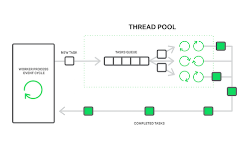
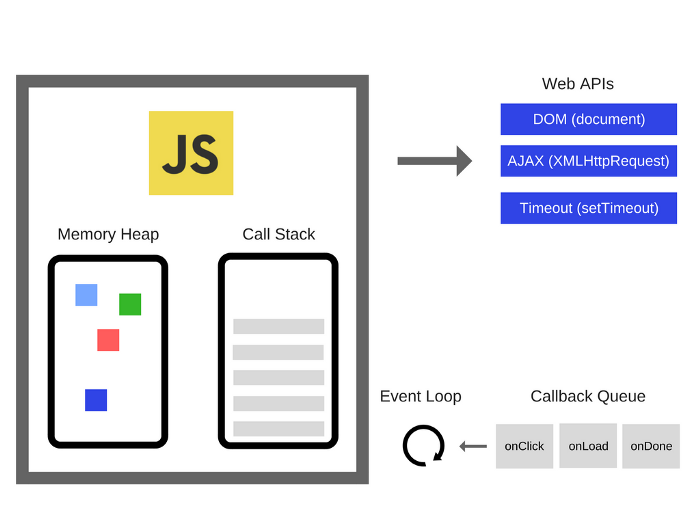

Chapter 9: Takeaways
Observations
The Asynchronous Runtime Pattern
While writing this report I noticed a pattern that repeats itself over and over. I call it the Asynchronous Runtime Pattern. If we want to categorize it this pattern would fall under the architectural/behavioural/structural patterns umbrella.
This Pattern can be categorized as Architectural, Behavioural and Structural
The main elements of the Asynchronous Runtime Pattern are:
- A task stack (exactly 1)
- An event-loop/watcher
- A task queue (1 or more)
- Workers (2 or more)
- The task stack: holds the tasks that need to be processed.
- The event-loop/watcher: monitors the task stack and moves tasks to the task queue when appropriate.
- The task queue: holds tasks that are ready to be processed.
- The workers: take tasks from the task queue and process them.
Instances that implement the Asynchronous Runtime Pattern
The following are some use-case examples that implement the Asynchronous Runtime Pattern on different levels of abstraction.
Hardware Level:
- Processor:
- A task stack => Instruction Set to be executed
- An event-loop/watcher => Processor's Control Unit
- A task queue => Buffers/Pipelines
- Workers => Arithmetic Logic Units (ALUs)
- Processor:
Software Level:
- Web Servers:
- A task stack => Client Requests
- An event-loop/watcher => Monitoring Process
- A task queue => Request Queue
- Workers => Worker threads/processes
- The Javascript Runtime:
- A task stack => Callstack
- An event-loop/watcher => Event-loop
- A task queue => Task-queue + Promises-queue
- Workers => Runtime Worker Threads
- Backend Job Processing:
- A task stack => Callstack
- An event-loop/watcher => Monitoring process/thread
- A task queue => Messaging Queue
- Workers => Worker Threads/Processes
- Web Servers:
Organizational Level:
- Help Desk/Call Center:
- A task stack => Incoming Calls
- An event-loop/watcher => The Calls Multiplexer
- A task queue => Calls On Hold
- Workers => Service Agents
- Scrum:
- A task stack => Product Backlog
- An event-loop/watcher => Iteration
- A task queue => Sprint Backlog
- Workers => Autonomous Team Memeber
- Help Desk/Call Center:
| Conway's Law | Dhia Eddine Nabli |
|---|---|
| > Any organization that designs a system (defined broadly) will produce a design whose structure is a copy of the organization's communication structure. | The workflow of an organization designing software should inherit the structure of the runtime of its produced software, which itself mimics the work structure of its underlaying hardware. |
| 1967 | 2023 |
Visual Examples of the occurrence of the Asynchronous Runtime Pattern:
| First Header | Second Header |
|---|---|
 |
 |
|  |  |
| First Header | Second Header |
|---|---|
|
| First Header |
|---|
|
Future Insights
Keep An Eye On
- AdonisJS
- WebAssembly